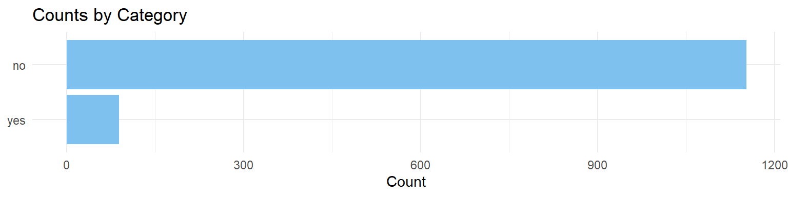

library(tidyverse)
library(scales)
library(cowplot)
library(MASS)
library(broom)
library(brant)
library(knitr)How Couples Meet and Stay Together
Data Set Information
This data set contains information from the “How Couples Meet and Stay Together” (HCMST) study, which surveyed 1,722 U.S. adults in 2022 to explore how relationships form and changed with time. It focuses on how relationships were influenced by the COVID-19 pandemic and offers insight at modern relationships, including changes in dating behaviors and how couples adapted during a challenging time. Conducted by Ipsos, and led by researchers from Stanford University, the survey focused on dating habits and the impact of the COVID-19 pandemic on relationships. Adapted from the original data set, this data offers a look at how social changes have changed how couples meet and stay together.
Download
Metadata
DOI
TBD
CSV Name
hcmst.csv
Dataset Characteristics
Multivariate
Subject Area
Family and Relationships
Associated Tasks
Classification
Feature Type
Factor, Integer, Numeric
Instances
1328
Features
21
Has Missing Values?
Yes
Variables
| Variable Name | Role | Type | Description | Units | Missing Values |
|---|---|---|---|---|---|
| subject_age | Feature | Numeric | Subject age | years | No |
| subject_education | Feature | Ordinal Categorical | Highest degree obtained. Ordered categories: [‘no_education’ < ‘1st_4th_grade’ < ‘5th_6th_grade’ < ‘7th_8th_grade’ < ‘9th’ < ‘10th’ < ‘11th’ < ‘12th_nodiploma’ < ‘high_school_grad’ < ‘some_college’ < ‘associate_degree’ < ‘bach_degree’ < ‘masters_degree’ < ‘prof_doct_degree’] | - | No |
| subject_sex | Feature | Nominal Categorical | Levels: [‘male’, ‘female’, ‘other’] | - | No |
| subject_ethnicity | Feature | Nominal Categorical | Levels: [‘white’, ‘black’, ‘other’, ‘hispanic’, ‘2_plus_eth’] | - | No |
| subject_income_category | Feature | Ordinal Categorical | Ordered categories: [‘under_5k’ < ‘5k_7k’ < ‘7k_10k’ < ‘10k_12k’ < ‘12k_15k’ < ‘15k_20k’ < ‘20k_25k’ < ‘25k_30k’ < ‘30k_35k’ < ‘35k_40k’ < ‘40k_50k’ < ‘50k_60k’ < ‘60k_75k’ < ‘75k_85k’ < ‘85k_100k’ < ‘100k_125k’ < ‘125k_150k’ < ‘150k_175k’ < ‘175k_200k’ < ‘200k_250k’ < ‘over_250k’] | dollars | No |
| subject_employment_status | Feature | Nominal Categorical | Levels: [‘working_paid_employee’, ‘working_self_employed’, ‘not_working_temp_layoff’, ‘not_working_looking’, ‘not_working_retired’, ‘not_working_disabled’, ‘not_working_other’] | - | No |
| same_sex_couple | Feature | Nominal Categorical | Levels: [‘no’, ‘yes’] | - | Yes |
| married | Feature | Nominal Categorical | Levels: [‘not_married’, ‘married’] | - | Yes |
| sex_frequency | Feature | Ordinal Categorical | Ordered categories: [‘once_or_more_a_day’ < ‘3_to_6_times_a_week’ < ‘once_or_twice_a_week’ < ‘2_to_3_times_a_month’ < ‘once_a_month_or_less’] | - | Yes |
| flirts_with_partner | Feature | Ordinal Categorical | Ordered categories: [‘every_day’ < ‘a_few_times_a_week’ < ‘once_a_week’ < ‘1_to_3_times_a_month’ < ‘less_than_once_a_month’ < ‘never’] | - | Yes |
| fights_with_partner | Feature | Ordinal Categorical | Ordered categories: [‘0_times’ < ‘1_time’ < ‘2_times’ < ‘3_times’ < ‘4_times’ < ‘5_times’ < ‘6_times’ < ‘7_or_more_times’] | Amount in the last 7 days | Yes |
| relationship_duration | Feature | Numeric | Duration of relationship | years | Yes |
| children | Feature | Numeric | Number of children in the household. | - | No |
| rel_change_during_pandemic | Feature | Nominal Categorical | Levels: [‘better_than_before’, ‘no_change’, ‘worse_than_before’] | - | No |
| inc_change_during_pandemic | Feature | Ordinal Categorical | Ordered categories: [‘much_worse’ < ‘worse’ < ‘no_change’ < ‘better’ < ‘much_better’] | - | Yes |
| subject_had_covid | Feature | Nominal Categorical | Levels: [‘no’, ‘yes’] | - | Yes |
| partner_had_covid | Feature | Nominal Categorical | Levels: [‘no’, ‘yes’] | - | Yes |
| subject_vaccinated | Feature | Nominal Categorical | Levels: [‘fully_vaccinated_and_booster’, ‘fully_vaccinated_no_booster’, ‘partially_vaccinated’, ‘not_vaccinated’] | - | Yes |
| partner_vaccinated | Feature | Nominal Categorical | Levels: [‘fully_vaccinated_and_booster’, ‘fully_vaccinated_no_booster’, ‘partially_vaccinated’, ‘not_vaccinated’] | - | Yes |
| agree_covid_approach | Feature | Nominal Categorical | Levels: [‘completely_agree’, ‘mostly_agree’, ‘mostly_disagree’, ‘completely_disagree’] | - | Yes |
| relationship_quality | Target | Ordinal Categorical | Levels: [‘excellent’ < ‘good’ < ‘fair’ < ‘poor’ < ‘very_poor’] | - | No |
About the Data
This data set is adapted from the original data set How Couples Meet and Stay Together 2017, 2022 survey, collected by Stanford University researchers. The data set explores the dynamics of relationships among adults in the United States, with data points gathered from subjects in 2017, 2020 and 2022. This adapted data set focuses on variables that may affect the quality of the relationship, considering demographic characteristics of the subjects, as well as the effect of the COVID-19 pandemic.
The COVID-19 pandemic had a significant impact on romantic relationships in the United States. This data set enables exploration of how external factors, like the health of the subjects and income changes, as well as personal behaviors, like conflict and intimate dynamics, relate to an individual’s perception of the quality of the relationship.
This analysis contributes to discussions around partnership resilience, healthy relationships, and how norms around sexuality and technology shape romantic relationships.
Key Features of the Dataset
Each row in the data set represents an individual subject and includes the following selected variables:
Subject demographics: age, sex, ethnicity, education level, income level, and employment status
Relationship context: whether the subject is part of a same-sex relationship, whether they are married, the duration of the relationship and how many children are in the household.
Couple behavior indicators: sex, flirting and fighting frequency.
Pandemic Variables: interpreted impact of the pandemic in the relationship, income change during the pandemic, if the subject and their partner were sick with COVID-19 and if they were vaccinated.
Quality of the relationship: variable used to measure the subject’s perceived quality of their relationship.
Purpose and Use Cases
This data set supports investigations into:
Demographic and behavioral predictors of relationship quality.
How the pandemic experience affected relationships.
Differences in relationship dynamics between different levels of income, sex and sexual orientation.
Case Study
Objective
What behavioral factors are strongly associated with relationship quality in the context of the COVID-19 pandemic? Are these factors different for same sex couples?
This case study examines the association between relationship_quality and a variety of demographic, behavioral and pandemic-related variables.
By examining survey data, we aim to:
- Identify the behavioral factors that most strongly affect the perceived relationship quality. We will focus specifically on finding how
sex_frequency,flirts_with_partnerandfights_with_partneraffect the perception of relationship quality and we are going to evaluate if these factors have a different impact onsame_sex_couples.
Methodology
0. Load Libraries
1. Data Cleaning & Processing
First, we can load our data set, select our specific variables of intereset and remove NAs from our data set.
# Reading Data
hcmst <- read_csv("../../data/clean/hcmst.csv")
# Review total rows
nrow(hcmst)[1] 1328# Select features of interest and removing NA
hcmst <- hcmst |>
dplyr::select(
same_sex_couple,
sex_frequency,
flirts_with_partner,
fights_with_partner,
relationship_quality) |>
drop_na()
# Remaining row count.
nrow(hcmst)[1] 1241# Visualize the data set
head(hcmst)# A tibble: 6 × 5
same_sex_couple sex_frequency flirts_with_partner fights_with_partner
<chr> <chr> <chr> <chr>
1 no once_or_twice_a_week a_few_times_a_week 0_times
2 no once_a_month_or_less never 7_or_more_times
3 no once_or_twice_a_week a_few_times_a_week 2_times
4 no once_or_twice_a_week 1_to_3_times_a_month 0_times
5 no once_or_twice_a_week a_few_times_a_week 0_times
6 no once_a_month_or_less less_than_once_a_mon… 1_time
# ℹ 1 more variable: relationship_quality <chr>2. Variable Encoding
We can note that our categorical response follows a specific order. For this reason, we require a model that suits ordinal responses. Hence, we will be using an Ordinal Logistic regression model framework.
In order to do so, we need to make sure that our response variable is encoded as an ordered factor. We will also take this opportunity to encode all our explanatory variables as factors (and ordered factors) as needed, even if we will not use all of them in our exercise.
# First, we can encode our nomical categorical explanatory variables:
hcmst <- hcmst |>
mutate(same_sex_couple = as_factor(same_sex_couple))
levels(hcmst$same_sex_couple)[1] "no" "yes"# Then, we can encode all our ordinal categorical explanatory variables:
hcmst <- hcmst |>
mutate(sex_frequency = as.ordered(sex_frequency)) |>
mutate(sex_frequency = fct_relevel(
sex_frequency,
c(
"once_a_month_or_less",
"2_to_3_times_a_month",
"once_or_twice_a_week",
"3_to_6_times_a_week",
"once_or_more_a_day"
)
))
levels(hcmst$sex_frequency)[1] "once_a_month_or_less" "2_to_3_times_a_month" "once_or_twice_a_week"
[4] "3_to_6_times_a_week" "once_or_more_a_day" hcmst <- hcmst |>
mutate(flirts_with_partner = as.ordered(flirts_with_partner)) |>
mutate(flirts_with_partner = fct_relevel(
flirts_with_partner,
c(
"never",
"less_than_once_a_month",
"1_to_3_times_a_month",
"once_a_week",
"a_few_times_a_week",
"every_day"
)
))
levels(hcmst$flirts_with_partner)[1] "never" "less_than_once_a_month" "1_to_3_times_a_month"
[4] "once_a_week" "a_few_times_a_week" "every_day" hcmst <- hcmst |>
mutate(fights_with_partner = as.ordered(fights_with_partner)) |>
mutate(fights_with_partner = fct_relevel(
fights_with_partner,
c(
"0_times",
"1_time",
"2_times",
"3_times",
"4_times",
"5_times",
"6_times",
"7_or_more_times"
)
))
levels(hcmst$sex_frequency)[1] "once_a_month_or_less" "2_to_3_times_a_month" "once_or_twice_a_week"
[4] "3_to_6_times_a_week" "once_or_more_a_day" hcmst <- hcmst |>
mutate(relationship_quality = as.ordered(relationship_quality)) |>
mutate(relationship_quality = fct_relevel(
relationship_quality,
c(
"very_poor",
"poor",
"fair",
"good",
"excellent"
)
))
levels(hcmst$sex_frequency)[1] "once_a_month_or_less" "2_to_3_times_a_month" "once_or_twice_a_week"
[4] "3_to_6_times_a_week" "once_or_more_a_day" head(hcmst)# A tibble: 6 × 5
same_sex_couple sex_frequency flirts_with_partner fights_with_partner
<fct> <ord> <ord> <ord>
1 no once_or_twice_a_week a_few_times_a_week 0_times
2 no once_a_month_or_less never 7_or_more_times
3 no once_or_twice_a_week a_few_times_a_week 2_times
4 no once_or_twice_a_week 1_to_3_times_a_month 0_times
5 no once_or_twice_a_week a_few_times_a_week 0_times
6 no once_a_month_or_less less_than_once_a_mon… 1_time
# ℹ 1 more variable: relationship_quality <ord>3. Exploratory Data Analysis
Let’s visualize histograms charts for our different categorical variables to see how different groups were sampled in the survey and how different these samples are for same sex couples.
First, we will create a function that will be used for visualization.
histogram_plot <- function(data, y_var, facet, plot_title = "Counts by Category") {
data_long <- data |>
dplyr::select(all_of(c(y_var, facet))) |>
pivot_longer(cols = all_of(y_var), names_to = "var", values_to = "value") |>
count(var, value, facet_value = .data[[facet]])
ggplot(data_long, aes(x = n, y = reorder(value, n), fill = facet_value)) +
geom_bar(stat = "identity", position = "dodge", color = "white") +
labs(
title = plot_title,
x = "Count",
y = NULL,
fill = facet
) +
theme_minimal() +
theme(legend.position = "none",)
}hist_sex_freq <- histogram_plot(
hcmst,
"sex_frequency",
"same_sex_couple",
plot_title = "Sex Frequency"
)
hist_flirt_freq <- histogram_plot(
hcmst,
"flirts_with_partner",
"same_sex_couple",
plot_title = "Flirting Frequency"
)
hist_fight_freq <- histogram_plot(
hcmst,
"fights_with_partner",
"same_sex_couple",
plot_title = "Fighting Frequency"
)
hist_quality_freq <- histogram_plot(
hcmst,
"relationship_quality",
"same_sex_couple",
plot_title = "Relationship Quality Frequency"
)
plot_grid(
hist_sex_freq,
hist_flirt_freq,
hist_fight_freq,
hist_quality_freq,
ncol = 1)
It can be noted that the sample of same_sex_couples is significantly smaller that that of different-sex couples..
Same-sex and different-sex couples show similar patters in how frequently they engage in sexual activity. However, the overall sample is skewed towards reporting low sex frequency.
We can also examine how ofter foucple flirt with or fight with their partners. The data indicates a skew towards lower frequencies for both flirting and fighting.
As for our target variable, most participants perceived the quality of their relationship to be good or excellent.
4. Ordinal Logistic Regression
We will be assuming and fitting a proportional odds model, which assumes that the log-odds of being in a higher category of the response variable follows a linear relationship with the explanatory variables.
For our modeling purposes, we will use the MASS package, polr() function to obtain model estimates.
Given that we are using ordinal categorical variables as explanatory variables, we will also set our model to use successive differences contrasts to facilitate the interpretation of the estimates.
options(contrasts = c("contr.treatment", "contr.sdif"))Now, we can fit our model. Noting that polr() does not calculate p-values, we can compute them and bind them to our model estimates. We will also focus only on statistically significant estimates.
For the purposes of this exercise, we will only use a subset of the variables in our modeling. We will be interested in how behavioral variables (sex_frequency, flirts_with_partner and fights_with_partner) affect the perception of relationship quality, additionally, we are interested in seeing if these effects are different for same_sex_couples.
ordinal_model <- polr(
relationship_quality ~ same_sex_couple + sex_frequency + flirts_with_partner + fights_with_partner,
data = hcmst, Hess = TRUE
)Warning: glm.fit: fitted probabilities numerically 0 or 1 occurredsummary_partial_ordinal_model <- cbind(tidy(ordinal_model),
p.value = pnorm(abs(tidy(ordinal_model)$statistic), lower.tail = FALSE) * 2) |>
mutate_if(is.numeric, round, 2)
summary_partial_ordinal_model |>
mutate(exp_estimate = exp(estimate)) |>
filter(p.value < 0.05,
coef.type == "coefficient") term estimate std.error
1 sex_frequency2_to_3_times_a_month-once_a_month_or_less 0.61 0.15
2 flirts_with_partneronce_a_week-1_to_3_times_a_month -0.68 0.32
3 flirts_with_partnerevery_day-a_few_times_a_week 0.80 0.27
4 fights_with_partner1_time-0_times -0.62 0.14
statistic coef.type p.value exp_estimate
1 4.07 coefficient 0.00 1.8404314
2 -2.15 coefficient 0.03 0.5066170
3 2.98 coefficient 0.00 2.2255409
4 -4.50 coefficient 0.00 0.5379444Note that fitting our model triggered a warning. This is caused by having categories in our model that are quite sparse, where combinations of the response and the levels of the predictor have no observations.A solution for this matter would be to bin some of the levels of our categories to avoid having empty combinations of levels between our response and explanatory variables. For now, we will only acknowledge this issue.
Positive estimates are associated with higher relationship quality, while negative estimates are associated with lower relationship quality. Additionally, the exponential of the estimate is the odds ratio, which represents how much the odds of having a higher relationship_quality level changes between levels.
We can interpret these estimates:
same_sex_couple: There is no statistical evidence that being part of a same-sex couple has an association with the perceived relationship quality.sex_frequency: People who have sex 2-3 times a month have 1.8 higher odds of reporting better relationship quality that those who have sex once a month or less.flirts_with_partner: Flirting once per week vs 1-3 times per month is associated with a 49% lower odds of better relationship quality. This is a bit unexpected.flirts_with_partner: Flirting every day vs a few times per week is associated with 2.3 higher odds of better relationship quality.fights_with_partner: Fighting once vs none is associated with 47% lower odds of better relationship quality.
With our fitted model, we are now able to make predictions on new examples. Based on demographic, behavioral, COVID-19 related variables, we can predict the probabilities of the different levels of perceived relationship_quality for a specific subject.
Based on the calculated estimates, we would think that people who have more sex, flirt more and fight less would perceive a better relationship_quality. We can test this premise:
round(predict(ordinal_model, tibble(
same_sex_couple = "no",
sex_frequency = "once_a_month_or_less",
flirts_with_partner = "never",
fights_with_partner = "7_or_more_times"),
type = "probs"),2)very_poor poor fair good excellent
0.05 0.25 0.42 0.25 0.03 round(predict(ordinal_model, tibble(
same_sex_couple = "no",
sex_frequency = "once_or_more_a_day",
flirts_with_partner = "every_day",
fights_with_partner = "0_times"),
type = "probs"), 2)very_poor poor fair good excellent
0.00 0.00 0.01 0.10 0.89 We can note that a subject involved in a different-sex couple who has sex once a month or less, that never flirt with their partner, and that fought with their partner 7 or more times in the last week, have a 42% probability of perceiving their relationship quality as fair. On the other hand, a subject involved in a different-sex couple, who has sex once or more per day, that flirts with their partner on a daily basis and that has not fought with their partner in the last week, has an 89% probability of perceiving their relationship quality as excellent.
5. Proportional Odds Assumption
To ensure the validity of our analysis, we are going to test the proportional odds assumption. To do so, we can use the Brant-Wald test, which assesses whether our model fulfills this assumption.
bt <- brant(ordinal_model)Warning: glm.fit: fitted probabilities numerically 0 or 1 occurred
Warning: glm.fit: fitted probabilities numerically 0 or 1 occurredWarning in brant(ordinal_model): 2118 combinations in table(dv,ivs) do not
occur. Because of that, the test results might be invalid.kable(bt, digits = 2)| X2 | df | probability | |
|---|---|---|---|
| Omnibus | 39.82 | 51 | 0.87 |
| same_sex_coupleyes | 2.88 | 3 | 0.41 |
| sex_frequency2_to_3_times_a_month-once_a_month_or_less | 2.38 | 3 | 0.50 |
| sex_frequencyonce_or_twice_a_week-2_to_3_times_a_month | 1.45 | 3 | 0.69 |
| sex_frequency3_to_6_times_a_week-once_or_twice_a_week | 2.85 | 3 | 0.42 |
| sex_frequencyonce_or_more_a_day-3_to_6_times_a_week | 0.00 | 3 | 1.00 |
| flirts_with_partnerless_than_once_a_month-never | 2.35 | 3 | 0.50 |
| flirts_with_partner1_to_3_times_a_month-less_than_once_a_month | 0.16 | 3 | 0.98 |
| flirts_with_partneronce_a_week-1_to_3_times_a_month | 0.00 | 3 | 1.00 |
| flirts_with_partnera_few_times_a_week-once_a_week | 0.88 | 3 | 0.83 |
| flirts_with_partnerevery_day-a_few_times_a_week | 1.50 | 3 | 0.68 |
| fights_with_partner1_time-0_times | 7.42 | 3 | 0.06 |
| fights_with_partner2_times-1_time | 1.43 | 3 | 0.70 |
| fights_with_partner3_times-2_times | 1.81 | 3 | 0.61 |
| fights_with_partner4_times-3_times | 2.06 | 3 | 0.56 |
| fights_with_partner5_times-4_times | 0.08 | 3 | 0.99 |
| fights_with_partner6_times-5_times | 0.08 | 3 | 0.99 |
| fights_with_partner7_or_more_times-6_times | 0.82 | 3 | 0.85 |
Again, warnings are triggered caused by sparsity in combinations of the response and the levels of the predictor that have no observations. Approaching these Brant-Wald test results with caution is advised, or binning categories together may help solve the concern.
Note that with an \(\alpha = 0.05\), we are completely fulfilling the proportional odds assumption (the column probability delivers the corresponding p-values).
Also, note that throughout the analysis we got a few warnings. These are caused by having categories in our model that are quite sparse, where combinations of the response and the levels of the predictor have no observations. These gaps may affect Brant statistics. A solution for this matter would be to bin some of the levels of our categories to avoid having empty combinations of levels between our response and explanatory variables.
Discussion
This analysis explored how sex frequency, flirting and fighting relate to perceived relationship quality for different types of couples. Through the analysis, we could note that relationship behaviors play a key role in how individuals assess their relationships. More specifically, we could conclude the following from this exercise:
Behaviors are important: More frequent sex and flirting are associated with higher perceived relationship quality, while more frequent fighting affects that perception negatively. Being part of a same-sex couple did not have a statistically significant impact on the perceived relationship quality
Some effects might not be linear: Not all statistically significant estimates led to better outcomes. Interestingly, flirting once a week was associated with a lower perceived relationship quality than flirting 1-3 times a month.
Encoding and model choice are critical: Model selection is tied to the type of response variable. Ordinal categorical response variables are tied to ordinal logistic regression models.
Interpretation is key: Having ordinal explanatory variables poses a challenge in interpretation of model estimates. Using the right contrasts supports model interpretation.
Sparsity may affect results: Having many levels in our categories may lead to sparsity in the combination of explanatory variables to all levels of the response variable. Caution is advised in these cases.
Attribution
Data adapted from Rosenfeld, Michael J., Reuben J. Thomas, and Sonia Hausen. 2023. How Couples Meet and Stay Together 2017-2020-2022 Combined Dataset. [Computer files]. Stanford, CA: Stanford University Libraries. Data.
Derbyshire K, Thai S, Midgley C, Lockwood P. Love under lockdown: How changes in time with partner impacted stress and relationship outcomes during the COVID-19 pandemic. J Soc Pers Relat. 2023 Sep;40(9):2918-2945. doi: 10.1177/02654075231162599. Epub 2023 Mar 9. PMID: 37744688; PMCID: PMC10009005.